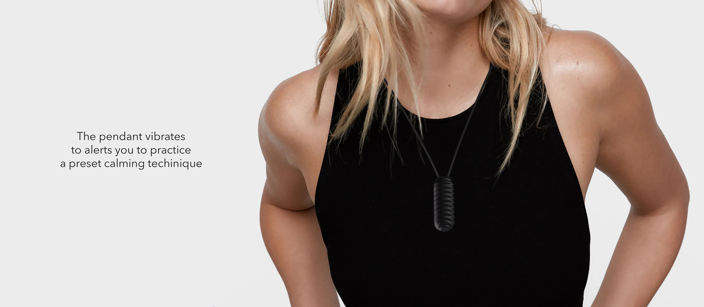

RESET
Industrial Design, Capstone
Reset is a physical reminder to be aware of emotions and practice Cognitive Behavioral Therapy techniques to help those with anxiety during stressful moments.
While researching why people play games, and exploring the different motivations and preferences around the types of games they play, I discovered the realm of gaming as an escape from anxiety. Using the insights from my research, I set out to design a smart product that would be able to provide some relief from everyday struggles.
Anxiety Disorder
Anxiety Disorder is an umbrella term that covers multiple types of disorders (panic, social, phobias, general, etc). The causes of these disorders vary person to person, but since we are all human, we have the same physiological responses to stress and anxiety.
Since the field of Mental Health is relatively new, we don’t know as much about the mind as we do about the body. The current most effective treatments are medicinal, which vary person to person, and regular therapy with a trained professional. While therapy is most effective, it is limited to scheduled visits, not the moments when you may need it the most.
Users
General Anxiety Disorder has become more common in college aged students and young professionals. Studies have also found that these generations are more stress than previous ones, so I decided to make this my target user group. With this in mind, I conducted multiple rounds of interviews with people between the ages of 18-32. To maintain privacy, I have built personas to represent the data.
Dominique (25)
Resident Physician
“I usually feel most anxious at home when I’m refelecting on my day. I get heart palpitations and I panic and hyperventilate.”

Jessica (31)
Historian
“I feel most anxious in unfamiliar situations, work, driving, social events, etc. I notice my heart rate increase, shortness of breath, insomnia, and I grind my teeth occasionally.”

Heather (20)
University Student
“I feel most anxious in large crowds and events. I sometimes get a tightness in my chest and I tend to cry like a fountain for any reason.”
Opportunity
Even though these people all live different lives, one thing that is the same is their physical response to stress. A person’s heart rate is always one of the first key signals that a person’s stress levels are rising. In Cognitive Behavioral Therapy, it is believed that our thoughts influence our emotions, which influence our behaviors, and then loop back into our thoughts. Disrupting this loop is the key to managing stress and emotions.
Solution
Currently the most effective method to manage personal anxiety is Cognitive Behavioral Therapy, as it has been found to be more effective than most medication. With the cycle of thoughts, emotions, and behaviors, a wearable heartrate tracker could be introduced into the loop. Anxious thoughts could be tracked via heartrate, and then a wearable device could be used to guide the wearer through relaxation exercises that can promote a more healthy cycle and positive thoughts.

Goals
The design goals were a combination of research backed solutions and person preferences from people who live with different forms of anxiety.

Validation
There are currently a few different ways heart rate can be tracked. To figure out the best form for this product to take, I researched various methods of heart rate tracking and interviewed users to see which ones they would most likely integrate into their current daily routines.
Inspiration
Taking element from textures that feel good to interact with, recognizable jewlery, and premium electronics to create something worth of an every day carry.
Validation Concepts
Designing with users in mind, I developed concepts to explore different interactions and forms to determine with one would be most suitable in their daily lives. I used these concepts to conduct a design review with people who have been disagnosed with General Anxiety Disorder.
Concept Development
Designing with users in mind, I developed concepts to explore different interactions and forms to determine with one would be most suitable in their daily lives. I used these concepts to conduct a design review with people who have been disagnosed with General Anxiety Disorder.


